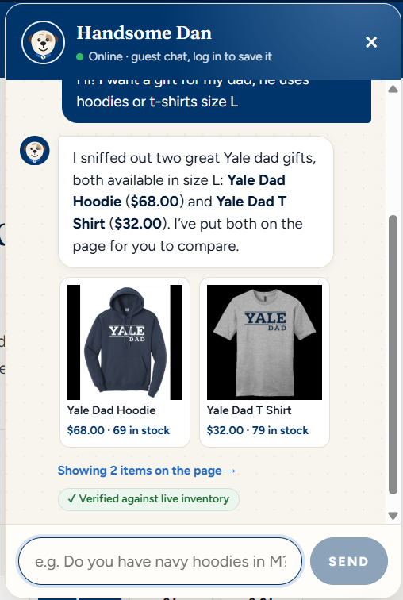
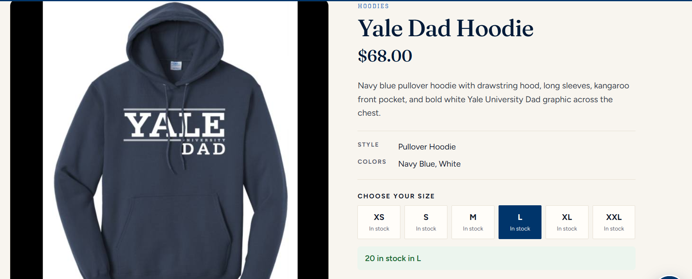
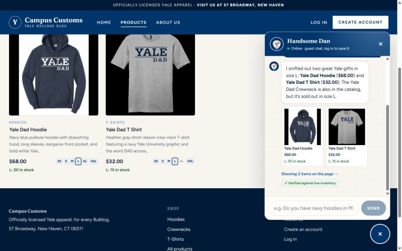
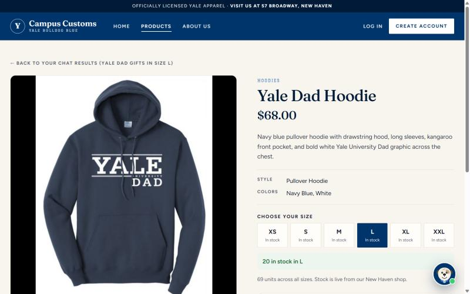
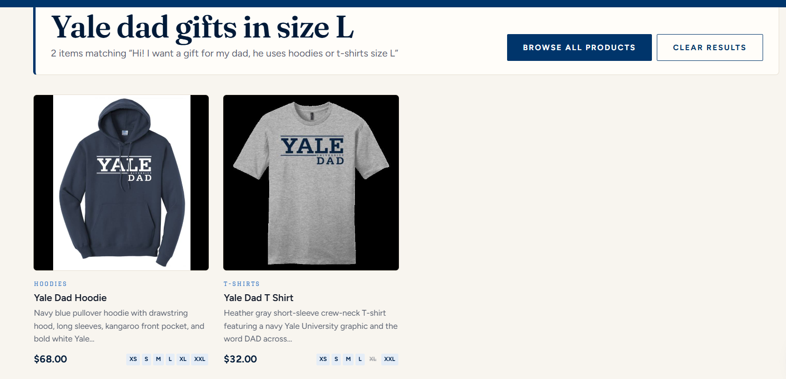
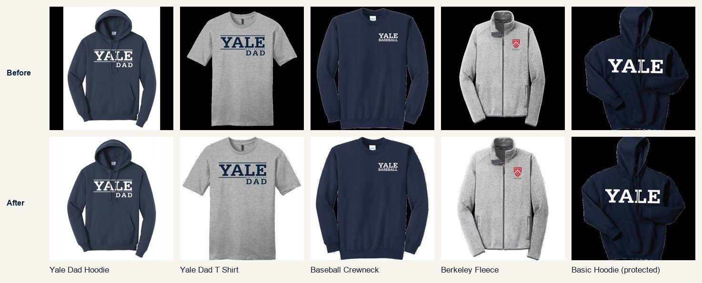
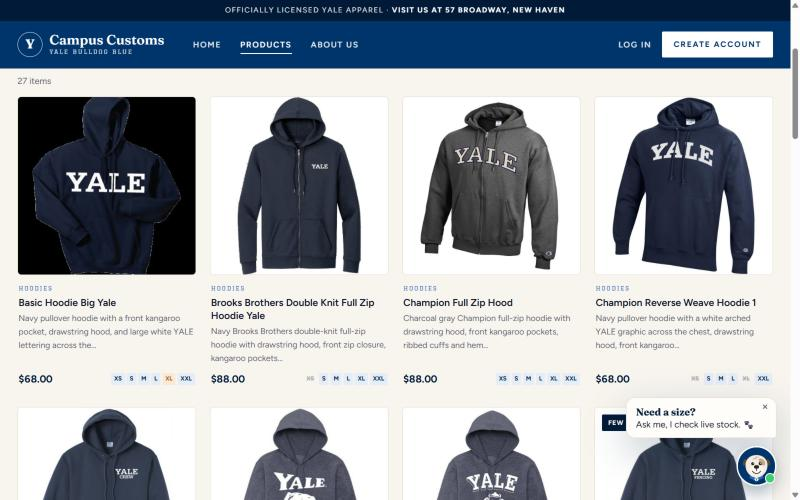

Summary
| # | Check | Result |
|---|---|---|
| 1 | Inventory level in the chat vs. the size the shopper asked for | Bug found Fixed & re-tested |
| 2 | Dynamic search-result cards after a category question, and opening the item page | Pass |
| 3 | Honesty of the reply text: sold-out sizes and the fact-check badge (complementary) | Pass |
| 4 | Product photo quality on cards (complementary) | Observation Fixed (follow-up) |
Test scenario used throughout: as a guest, ask Handsome Dan "Hi! I want a gift for my dad, he uses hoodies or t-shirts size L". Database truth for the matched items (from inventory): Yale Dad Hoodie: XS 5 · S 5 · M 12 · L 20 · XL 12 · XXL 15 (total 69). Yale Dad T Shirt: XS 20 · S 12 · M 20 · L 15 · XL 0 · XXL 12 (total 79).
Check 1: Inventory level in the chat Bug found Fixed
Tester's comment: the chatbot shows a stock number that is the sum of all sizes, but when I open the product and check the size I actually asked for (L), there is much less stock than the chat said.
Before the fix




Root cause
The agent's text was correct, but the chat cards always displayed the product's total_stock. The API contract had no way to say which size the shopper was asking about, so the frontend couldn't show the right number. For a shopper this is misleading: a hoodie can look well stocked while their size is almost gone or sold out.
Fix (made after this check)
- Agent output:
ShopReply.sizewas added. When the shopper mentions a size, the agent sets it (here"L"). The backend validates it to XS–XXL and returns it asChatReply.size. The prompt also tells the agent never to quote the all-sizes total when a size was asked for. - Chat cards now show stock for that size ("L: 20 in stock", or "Sold out in L"). Without a size they say "69 in stock (all sizes)" so the total is never mistaken for a size count.
- Results grid outlines the requested size on every card's size strip and prints its count. The banner says "stock shown for size L".
- Card links open the product page with
?size=L, so the size picker starts on L.
After the fix (re-test, same question)


/products/yale-dad-hoodie?size=L, L is already selected and it shows "20 in stock in L". The chat, the cards and the item page now all tell the shopper the same number.Check 2: Dynamic search-result cards Pass
Tester's comment: after a category-style question, the matching products appear on the page as cards. It's upfront and easy to use. The products show right away in the chat and on the page, and clicking through to see more detail is easy.

Complementary verification: the cards' data comes from the database, not from the model's text. The T-shirt's size strip shows XL struck through, which matches inventory (Yale Dad T Shirt XL = 0). Clicking a card opens the single-item page shown in Check 1 (large image, description, colors, size picker), and the page offers "← Back to your chat results" to return to the grid.
Check 3: Honesty of the reply text Pass (complementary)
In the re-test (screenshot after the fix above), Dan also volunteered: "The Yale Dad Crewneck is also in the catalog, but it's sold out in size L." Checked against the database: Yale Dad Crewneck L = 0 (M and XL are also 0). That's correct, and it's the helpful kind of honesty: the shopper learns the item exists but won't fit the request, instead of being shown it.
Every reply that states a price or stock number carries the green "✓ Verified against live inventory" badge (visible in both chat screenshots). The backend fact-checker compared $68.00 and $32.00 with the tool results before the reply was shown.
Check 4: Product photo quality Observation Fixed (complementary)
Observation: in the screenshots above, the hoodie and tee photos have black bars on the sides. They are baked into the catalogue image files, not added by the site. A scan of data/products/ found 73 of 102 photos with black bars, and in 45 of them the whole background is black.
Fix (tester's follow-up: "yes, trim the black bars on the photos")
- Originals untouched.
backend/images.pyprocesses each photo on first request and caches the result inbackend/.image_cache/. The/media/products/{file}.jpgroute only serves files that really exist indata/products(checked by exact name), so../campus_customs.dband similar paths return 404. - Step 1, trim bars: crop to the bounding box of non-black content, then pad back to a square. This is applied to all 73 photos with bars. The 29 clean photos are unchanged.
- Step 2, black backgrounds: flood-fill the black from the photo edges to white, so the fill only spreads through connected near-black pixels. A safety check measures how much "not-quite-black" (garment-colored) area got whitened. On good photos it's under 0.1%; when it leaks into a very dark navy garment it's 45–60%. In that case stricter thresholds are tried, and if all of them leak, the photo keeps its black background rather than risk damaging the product. Result: 41 whitened, 4 deliberately kept on black (Basic Hoodie Big Yale, Boola Boola tee, Football and Track & Field left-chest tees, all near-black navy).

